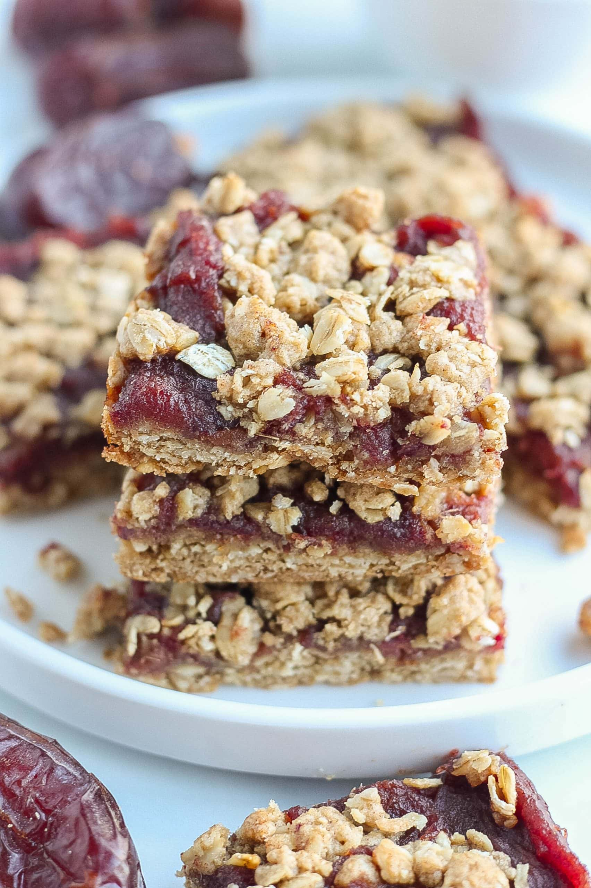

Date Bars
Back to Home

Ingredients
For Filling
- 3 cups of pitted medjool dates, chopped
- 1/4 cup brown sugar
- 1/2 cup water
- 1 tbsp butter
- 2 tbsp lemon juice
- pinch of salt
For Crumble
- 1 cup brown sugar
- 1 3/4 cups flour
- 1 tsp salt
- 1/4 tsp baking soda
- 1 cup melted butter
Steps
-
Line 9x9" baking dish with parchment so bars can be pulled out after
baking
-
Mix together filling ingredients in a sauce pan and cook on low until
starting to break down and color darkens
-
Once mixture has started to heat up, pre-heat oven to 350 degrees
farenheit
-
Combine dry crumble ingredients in a bowl big enough for stirring. Mix
in melted butter until it's a slightly wet crumble
-
Add half of crumble mixture to bottom of prepared pan. Add slightly
cooled date mixture on top, spread evently. Spread remaining crumble on
top, it's okay if some date mixture pokes through
- Bake 30-40 minutes until light brown
- Cool completely before cutting
- Enjoy!